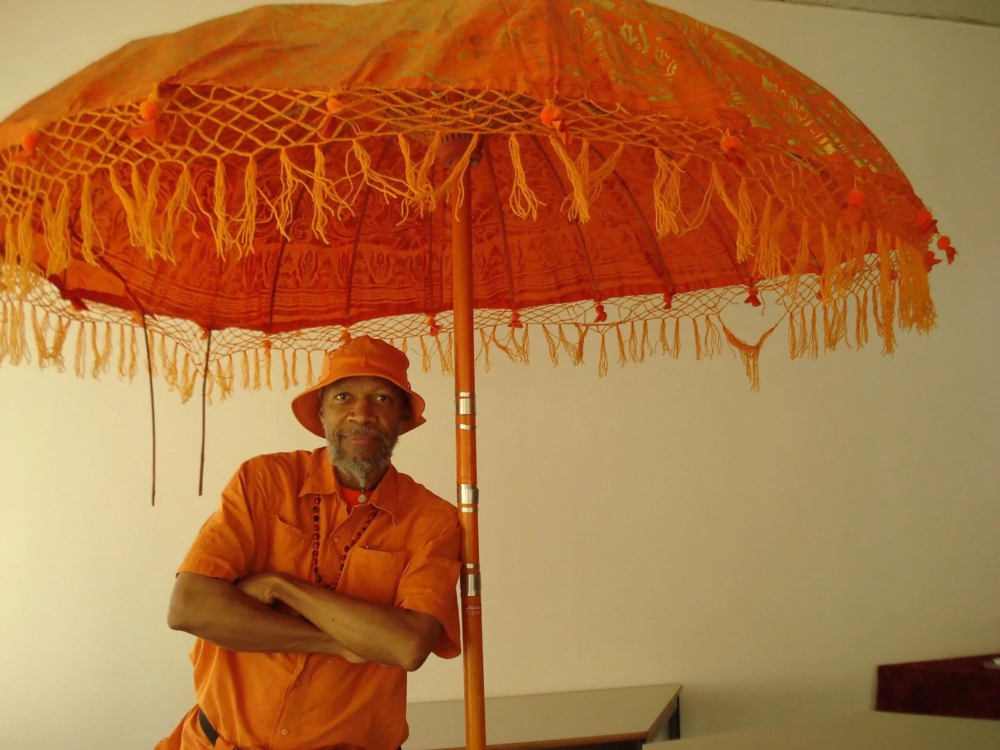
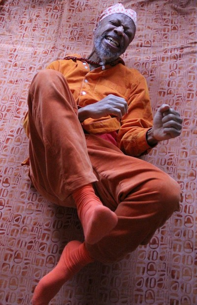

LARAAJI Concert At The Fillmore SF
 About the Texas Native, In the mid 2000s Kevin Morby left his native Kansas City for the vibrant streets of Brooklyn, initially making a name for himself as the bassist for noise folk stalwarts Woods and frontman of indie rock outfit The Babies. In 2013, Morby released his first solo album Harlem River, a departing love letter to the Big Apple that preceded a move to the bright lights of Los Angeles, a city that his since shaped the blossoming alternative indie sound of his subsequent albums.
The concert was alive and carried the spirit of the Morby's musical genius to a live audience. My second show at the fillmore but this show apart of many I have attended. It has been my new favorite musician and show I have seen live up to date. Discovering Kevin Morby a year ago was one of the best discoveries I have made. Go listen to the young legend on today's music platforms.